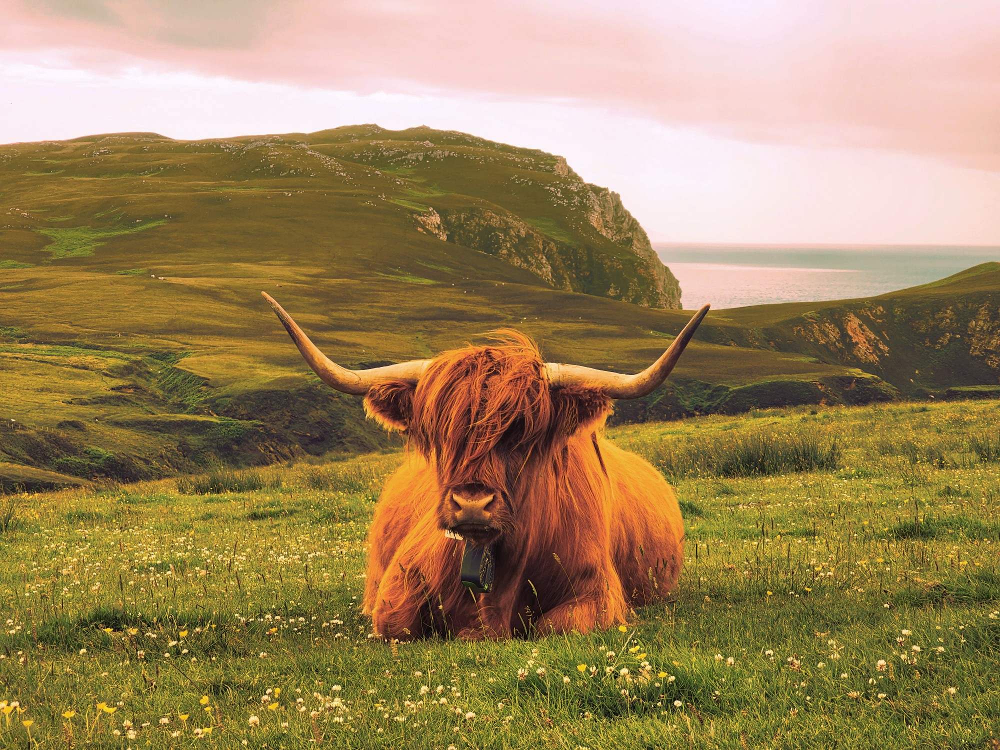
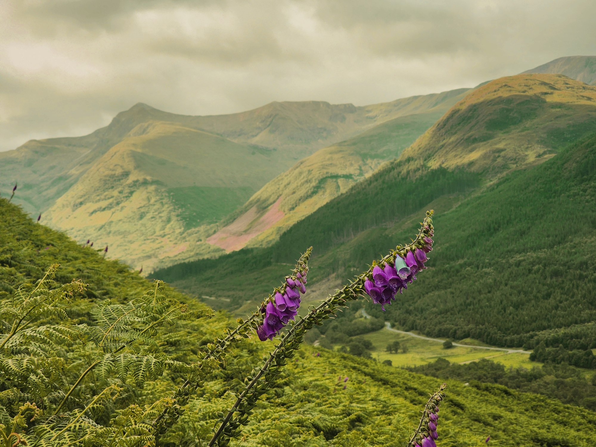
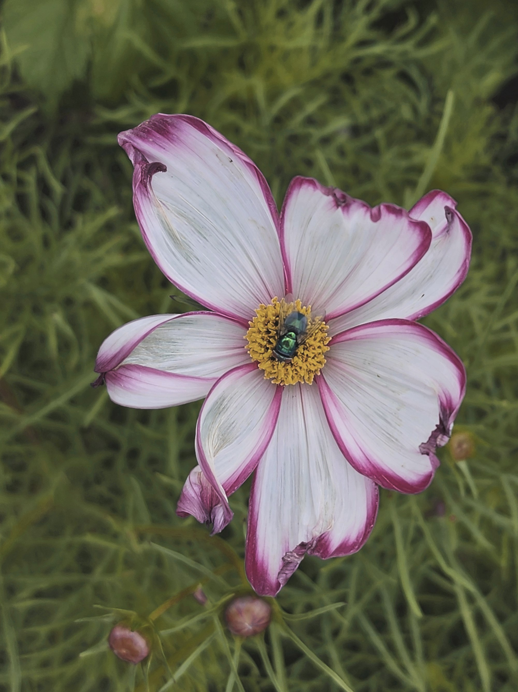

Bild 1
Jag tyckte att hela denna bilden hade en röd beläggning så det var det första jag ville fixa.
Sedan försökte jag också sänka de starka färgerna till lite mer normala färger.
För att fixa detta gick jag till CMYK och höjde magendan en hel del, jag höjde också yellow lite,
sedan sänkte jag cyan en del.
Vid HSB så var det bara saturation som jag ändrade, den sänkte jag lite granna.
När jag var nöjd med djurets och naturens färg tyckte jag ändå att himlen och vattnet fortfarande var för röd,
så jag satte på en mask, och ändrade bara himlen och havet.
Jag valde också att ta bort öronlapparna som kossan hade, då jag tycker att det blir mer naturligt
och passar omgivningen bättre. Jag använde clone tool till detta, och valde att klona från flera olika ställen
från örat för att den har såpass många olika färger. Jag växlade också mellan olika hårstrån som jag klonade också, för att resultatet
skulle se så naturligt ut som möjligt. Jag blev väldigt nöjd med detta!

Redigerad bild

Orginalbild
Bild 2
Här tyckte jag att bilden var väldig mörk, så jag valde att höja både brightness och contrast tills det såg bra ut.
Då såg det väldigt snyggt ut, fast eftersom bild nummer 1 hade lite mildare grön färg på gräser och jag ville att
de skulle matcha varandra så valde jag att ändra lite till. Jag sänkte både magendan och hue tills jag tyckte det
matchade bättre.
Efter detta ville jag att ändra färg på en enda blomsterklocka till en annan färg, så jag testade göra det. Jag använde
en mask för att visa exakt vad jag ville ändra, och experimentera med olika färger till något jag tyckte om. Det slutade
med en mintgrön-aktig färg, den fick jag fram genom att höja cyan och yellow medans jag också sänkte key och hue.
Men tack vare att den går efter fägen som orginalet är fick den också med skuggorna. Så även denna blomman fick ett djup
i sig, vilket tyckte jag var coolt!

Redigerad bild

Orginalbild
Bild 3
Denna blomman tyckte jag också var väldig mörk, så jag höjde brightness en hel del och höjde också contrasten lite.
Sedan i HSB höjde jag alla tre för att den skulle bli lite ljusare. Sedan var det samma sak här, gräset var väldigt
grönt och jag ville få det mer i de mildare tonerna. Så jag skapade en mask och målade hela blomman svart för jag ville
ha den som den redan är. Sedan så sänkte jag hue för att få gräset till en bra färg.

Redigerad bild

Orginalbild